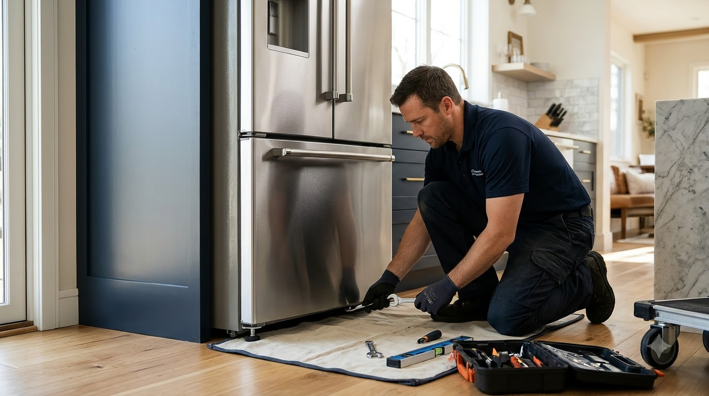
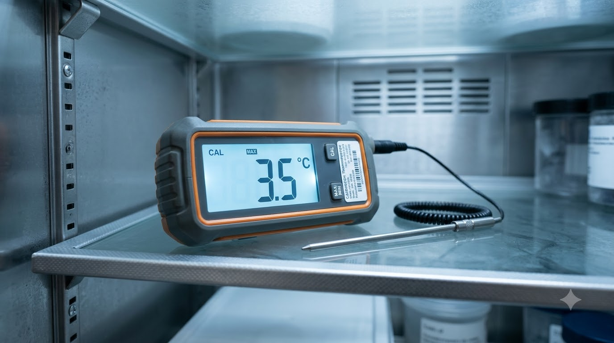
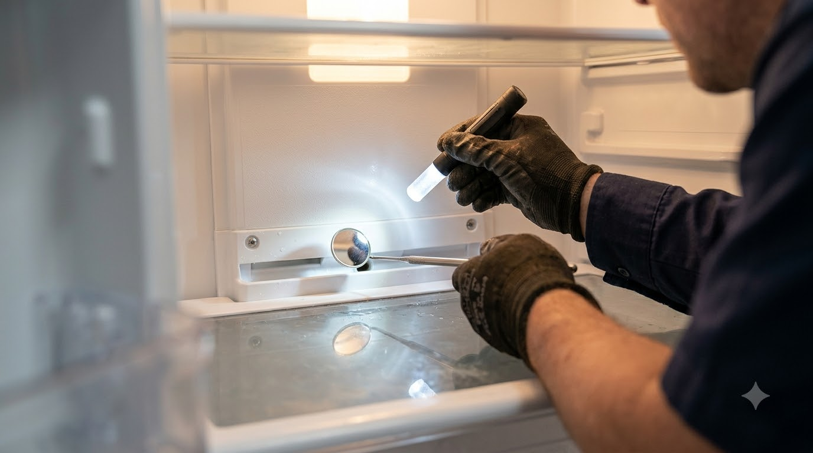
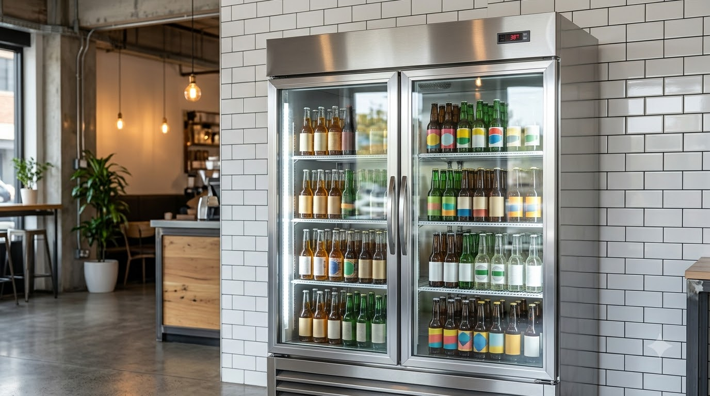
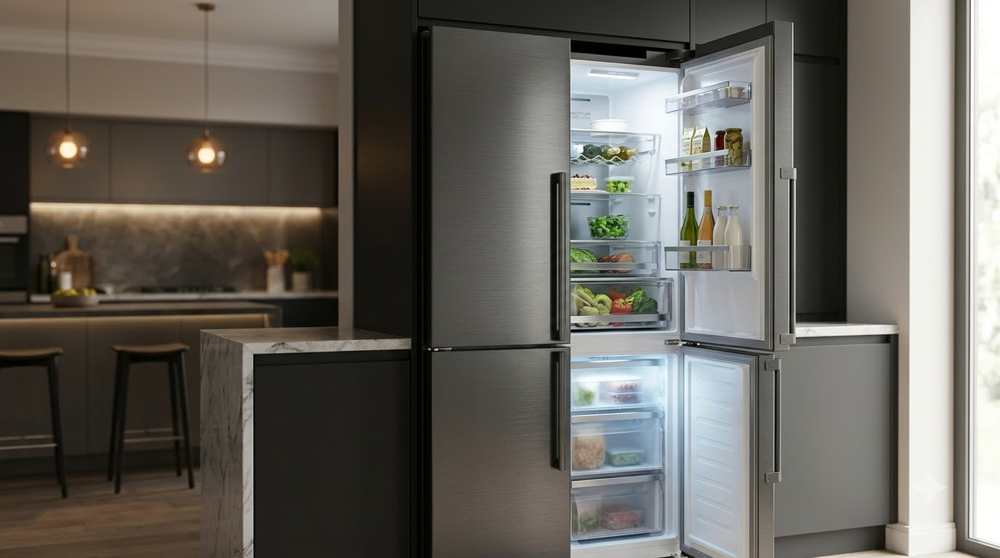

Refrigerator Repair And Maintenance For Everyday Needs.
Structured cooling solutions tailored for household convenience and commercial refrigeration reliability. Review dedicated service categories below.

Refrigerator Repair & Troubleshooting
When your refrigerator begins displaying abnormal behavior, an organized diagnostic inspection identifies whether the issue stems from electrical sensors, airflow circulation, mechanical components, or defrost timing.
- Refrigerator not cooling adequately
- Freezer not freezing properly
- Unusual motor or fan vibration noises
- Internal or external water leakage
- Temperature inconsistencies & swings
- Refrigerator not starting or powering up

Refrigerator Installation & Setup
Correct physical installation ensures that doors swing freely, gaskets seal airtight by gravity assistance, and condenser heat dissipates with optimal clearance without overloading the compressor.
- New refrigerator positioning & unboxing
- Precision levelling foot calibration
- Perimeter air clearance verification
- Post-transit settling period guidance
* Note: We emphasize appliance positioning and physical levelling. Unsafe electrical modifications or breaker rewiring must always be handled by certified residential electricians.
Request Installation Setup
Preventive Refrigerator Maintenance
Over time, dust blankets the condenser coils, reducing thermal transfer and forcing the compressor to run longer cycles. Regular maintenance restores optimal operating temperatures and protects internal seals.
- Condenser coil dust clearing check
- Door gasket seal compression check
- Condensate drainage line flushing
- Temperature sensor response baseline

Freezer Compartment Services
Freezer compartments must sustain sub-zero environments without accumulating snow-like frost. We inspect defrost elements, evaporator fan motors, and thermal cut-offs to restore steady freezing capability.
- Sub-zero freezing capability inspection
- Excessive frost and ice buildup analysis
- Freezer door gasket sealing check
- Automatic defrost cycle verification

Cooling Performance Assessment
Uneven cooling or temperature spikes can result from blocked airflow registers, failing thermistors, or air damper flaps sticking. We provide empirical temperature monitoring across distinct compartments.
- Multi-zone digital temperature logging
- Air duct damper actuation testing
- Uneven cooling zone mapping
- Thermostat calibration check
* Note: In accordance with professional standards, we do not promise an exact repair outcome prior to complete hands-on diagnostic inspection.
Schedule Cooling Assessment
Water Leakage & Drainage Assessment
Water collecting under the crisper drawers or escaping onto kitchen floorboards typically indicates frozen defrost drains, misaligned drain pans, or door gasket humidity ingress.
- Defrost trough and drain tube clearing
- Evaporation drain pan integrity check
- Internal condensation balance check
- Door gasket thermal barrier verification
* Note: Water leakage near live electrical wires requires caution. Always isolate power before touching standing water near the compressor compartment.
Request Leak Assessment
Commercial Refrigerator Enquiries
Commercial chillers operate in fast-paced retail and culinary settings with continuous door cycles. We assist commercial operators with display coolers, reach-in fridges, and beverage merchandising units.
- Retail glass door display chillers
- Commercial kitchen reach-in refrigerators
- Forced air condenser hygiene checks
- Heavy-use door hardware & closer tension

Repair vs. Replacement Guidance
Not every refrigerator issue justifies a repair investment. When an appliance is older or has multiple aging assemblies, we provide transparent evaluation criteria to help homeowners choose whether to repair or replace.
- Objective appliance age & condition review
- Component availability assessment
- Energy efficiency technology comparisons
- Replacement dimensions & fit guidance
* Note: We provide unbiased advisory input. Universal lifespan guarantees or guaranteed utility bill savings are not offered as operating variables differ.
Request Replacement AdviceFrequently Asked Service Questions
Helpful answers to assist you in understanding refrigerator diagnostics, maintenance routines, and enquiry steps.
Ready To Discuss Your Appliance?
Submit your refrigerator details, indicate the service required, and explore our diagnostic workflow.
Submit Service Request